En Android, el hilo principal se encarga de mostrar la interfaz y gestionar las interacciones con la app.
Esto implica que si el hilo principal ejecuta una tarea pesada o asíncrona, la interfaz puede bloquearse y el usuario no podrá interactuar hasta que termine.
Kotlin proporciona coroutines para realizar acciones sin bloquear el hilo principal.
Las corrutinas son más eficientes que los hilos porque agrupan los hilos disponibles para ejecutar instrucciones con diferentes configuraciones (context + dispatcher).
Además, el número de hilos es limitado, pero el número de corrutinas que se pueden iniciar es casi infinito.
Por lo tanto, cuando desees ejecutar un conjunto de instrucciones y evitar bloquear el hilo principal, debes crear una corrutina y especificar la configuración en la que se ejecutará, permitiendo que el sistema gestione la corrutina utilizando tantos hilos como sea necesario.
Más información: Corrutinas de Kotlin y Corrutinas de Kotlin en Android.
Las funciones suspendidas permiten pausar y reanudar la ejecución sin bloquear el hilo actual.
Estas funciones deben ejecutarse dentro de una corrutina o un alcance de corrutina (coroutine scope) o dentro de otra suspend function.
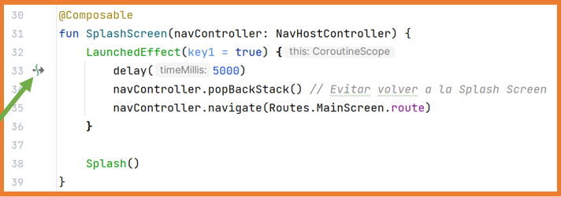
Uso
Una función suspendida es aquella que puede ser "pausada" y luego reanudada sin bloquear el hilo actual. Esto las hace ideales para operaciones que consumen tiempo, como:
Sintaxis básica
suspend fun functionName(): ReturnType {
// Function code
}
Las funciones suspendidas simplifican el manejo de operaciones asíncronas al eliminar la necesidad de callbacks complejos.
Ejemplo: Imagina que estás simulando una descarga de datos que tarda 2 segundos.
suspend fun downloadData(): String {
delay(2000) // Simula un retraso de 2 segundos
return "Datos descargados"
}
fun main() {
runBlocking { //Esta es una corrutina especial que hace que el hilo principal espere por ella.
println("Descarga iniciando...")
val result = downloadData() //Aquí la corrutina está bloqueada
println("Resultado: $result")
}
}Explicación:
Define, entre otras cosas, el trabajo (Job) y el despachador (Dispatcher, conjuntos de hilos) que se utilizarán para realizar la tarea.
var job=Job()
val coroutineContext: CoroutineContext = Dispatchers.IO + job
launch(coroutineContext){
//Acciones
}
Establece el ámbito de ejecución para la corrutina, es decir, dónde se utilizará la corrutina.
var job=Job()
val coroutineContext: CoroutineContext = Dispatchers.IO + job
val coroutineScope = CoroutineScope(coroutineContext)
coroutineScope.launch{
//Acciones
}
....
coroutineScope.cancel("....")
Normalmente, el CoroutineScope es proporcionado por el entorno (rememberCoroutineScope, viewModelScope, ...) donde se utiliza, pero podemos crear el nuestro propio.
Usando rememberCoroutineScope y viewModelScope puedes ejecutar corrutinas con launch (entre otros constructores).
Cuando la corrutina se ejecuta dentro de un elemento @Composable, la corrutina se cancelará si la pantalla ya no es visible.
Con el método launch, puedes almacenar el identificador de la corrutina para cancelarla más tarde si es necesario. Esto es especialmente útil para corrutinas ejecutadas dentro de un ViewModel.
var myCoroutinJob:Job = Job()
myCoroutinJob = viewModelScope.launch{
//Acciones a realizar en la corrutina
}
....
//Puedes cancelar la corrutina usando su job. (Entre otras acciones)
myCoroutinJob.cancel()Permiten ejecutar varias acciones en segundo plano y esperar por ellas de forma concurrente, evitando el bloqueo.
// Nota: El código original estaba incompleto, aquí se muestra la estructura corregida
viewModelScope.launch {
// Nota: No es un entero, es un Deferred
val datoA = async {
println("Inicio A")
delay(2000)
println("Fin A")
40
}
// Nota: No es un entero, es un Deferred
val datoB = async {
println("Inicio B")
delay(4000)
println("Fin B")
60
}
// Esperar a que ambos terminen; como son deferred usamos await()
val total = datoA.await() + datoB.await()
println("${datoA.await()} + ${datoB.await()} = $total")
}Como se ha estudiado anteriormente, Jetpack Compose realiza recomposiciones de la interfaz de usuario cuando ocurren cambios de estado.
A veces, la aplicación se recompone más o menos veces de las necesarias o incluso, al recomponerse, se ejecuta código que no debería ejecutarse.
Todas estas situaciones no deseadas se denominan Side Effects (Efectos Secundarios).
Todos los componentes de la aplicación deben evitar los efectos secundarios, pero hay momentos en los que son necesarios, como para eventos únicos como mostrar una notificación o navegar a una pantalla si un estado cumple una condición.
El siguiente código produce un efecto secundario:
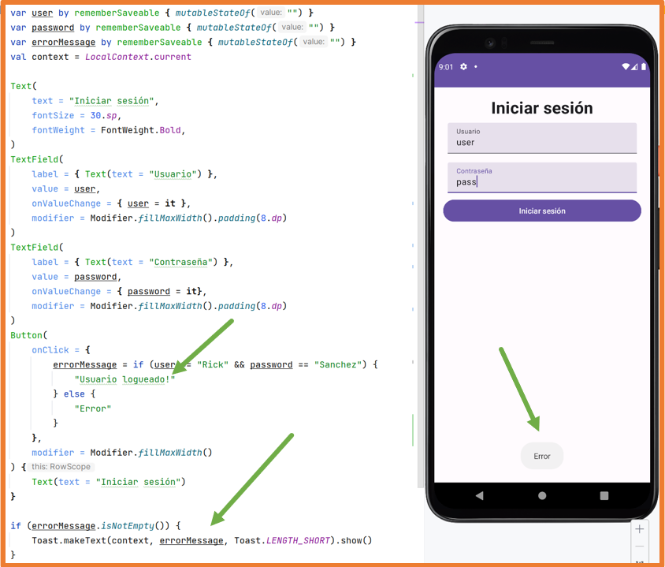
Cuando se pulsa el botón, el mensaje cambia.
El Toast se muestra siempre que el mensaje no esté vacío.
Una vez que se pulsa el botón y el mensaje deja de estar vacío, a partir de ese momento, cuando el TextField cambie, el Toast se mostrará siempre.
To resolver estos problemas, se crearon los Effects Handlers (Manejadores de Efectos) que permiten ejecutar estas acciones en un entorno controlado.
Los Effects Handlers también facilitan el uso de corrutinas en Jetpack Compose.
Los Effects Handlers disponibles son:
Un bloque LaunchedEffect se ejecuta la primera vez que el componente en el que está incluido se compone.
Después de eso, solo se ejecutará (recompondrá) si alguno de los parámetros que recibe cambia.
LaunchedEffect admite hasta tres parámetros clave (key1, key2, key3) o una lista de claves.
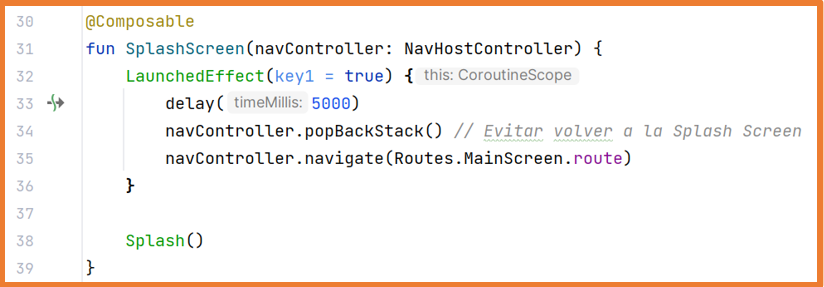
En el ejemplo anterior, el bloque solo se ejecutará una vez (cuando el componente se componga por primera vez) aunque la función SplashScreen se recomponga, ya que el parámetro que recibe siempre tendrá el mismo valor (true).
Un bloque LaunchedEffect es una corrutina, por lo que también permite ejecutar funciones de suspensión dentro de un componente @Composable.
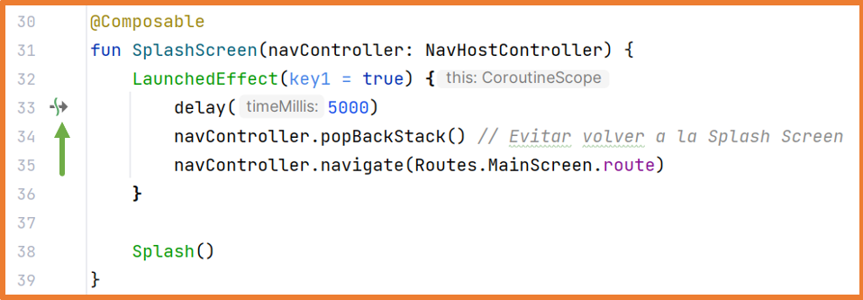
Así, si el bloque se está ejecutando y sufre una recomposición (debido al cambio de una clave), la corrutina que se estaba ejecutando se cancela y comienza de nuevo.
La corrutina cancela su ejecución cuando el bloque LaunchedEffect sale de la composición (ya no está en pantalla).
Aplicándolo al ejemplo anterior del login:
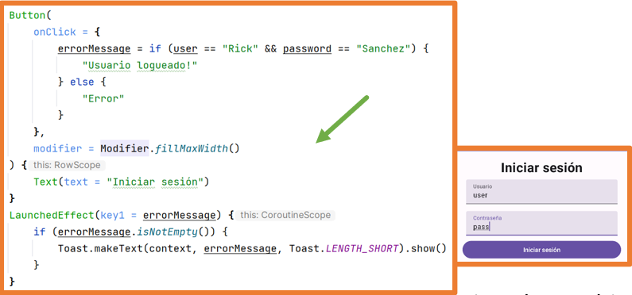
El bloque LaunchedEffect se ejecutará cada vez que el estado message cambie.
Este primer enfoque no funcionará correctamente porque el mensaje solo cambia cuando pasa de "User logged in!" a "Error" y viceversa. Por lo tanto, si ocurre un error y cuando los datos cambian el error persiste, el mensaje no se mostrará de nuevo.
Para solucionar esto, simplemente limpia el message después de mostrar el Toast.
Ejemplo de Login Completo:
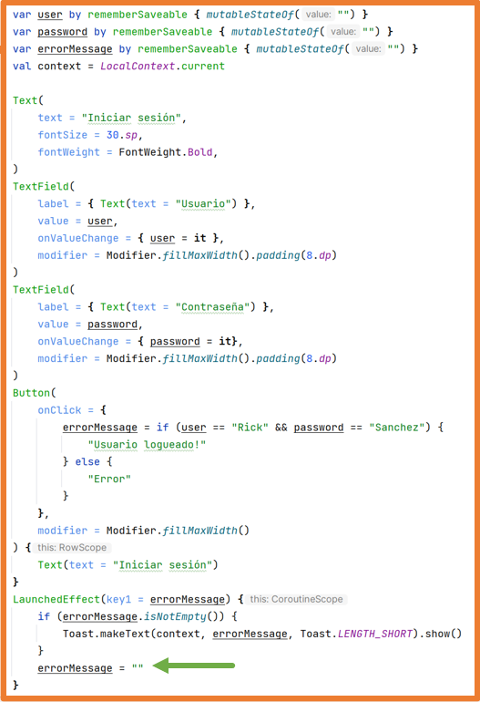
RememberCoroutineScope permite obtener un ámbito seguro (scope) para ejecutar una corrutina.
Se utiliza cuando necesitas ejecutar una función de suspensión fuera del ámbito de un componente @Composable, como dentro de un onClick.
No puedes usar LaunchedEffect si no estás dentro de un contexto @Composable.
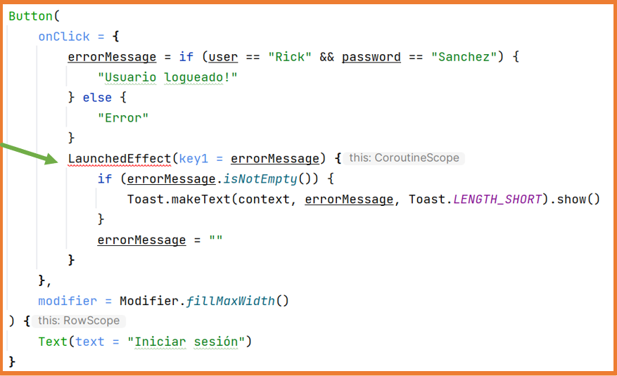
En este caso, se necesita el ámbito (scope) de una corrutina.
Primero, obtienes el ámbito de la corrutina con rememberCoroutineScope y luego, para ejecutar la corrutina, utilizas la función launch.
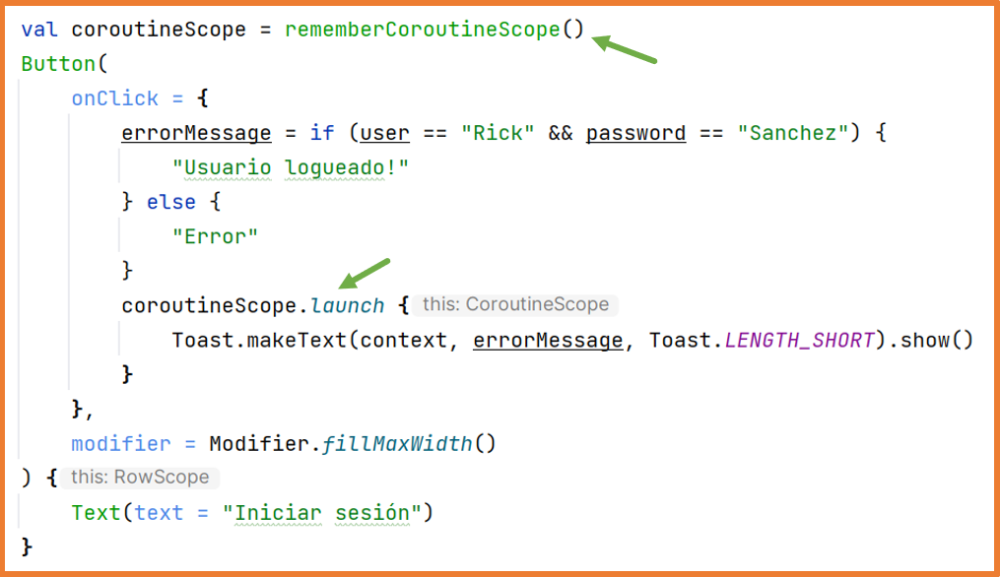
Este Effect Handler ya se ha utilizado para mover el scroll automáticamente.
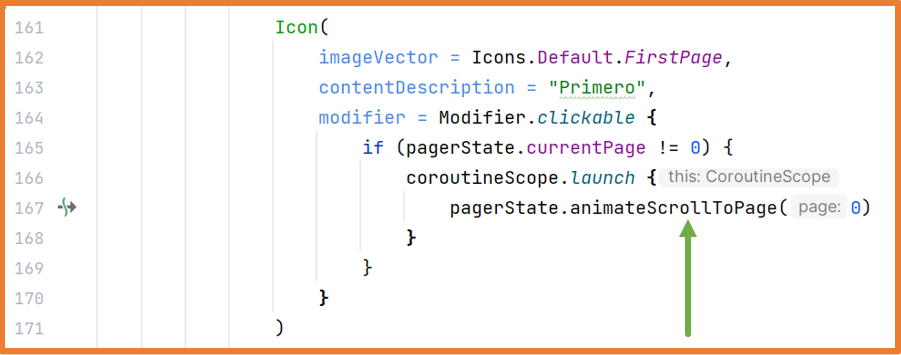
Mover el scroll es una función de suspensión, y al realizar esta acción haciendo clic en un botón, se necesita el ámbito de la corrutina.
Al usar la función launch, la corrutina se ejecuta en el hilo principal (main thread), lo que a veces puede ser problemático ya que podría bloquear la interfaz de usuario.
La función launch permite especificar el contexto en el que debe ejecutarse la corrutina:
Si las acciones realizadas en la función launch están relacionadas con la interfaz de usuario, es mejor no especificar nada o especificar Dispatchers.Main.
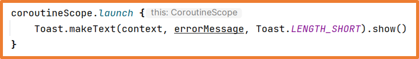
Si las acciones realizadas en la función launch están destinadas a obtener datos de fuentes externas o almacenamiento, o si las acciones no están relacionadas con la interfaz de usuario, es mejor especificar Dispatchers.IO.
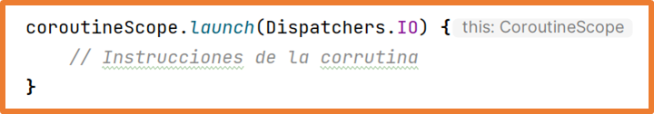
El manejador derivedStateOf permite crear un estado que depende de uno o más estados adicionales.
De esta manera, se evitan recomposiciones adicionales innecesarias.
Se podría decir que derivedStateOf no activa recomposiciones hasta que el valor del estado cambie respecto a su valor anterior.
Para entender mejor la necesidad de derivedStateOf, estudiemos el siguiente ejemplo:
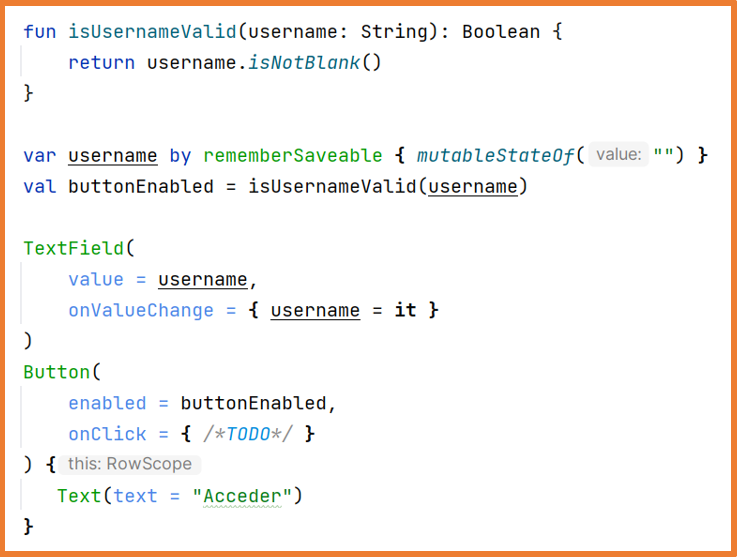
Cuando el estado username cambia, se ejecuta la función isUsernameValid, la cual cambiará el valor de buttonEnabled, y el botón se recompondrá cada vez que se escriba una letra.
¿Tiene sentido recomponer el botón si buttonEnabled es true y al escribir otra letra sigue siendo true?
Al indicar que buttonEnabled es un estado derivado de otro, se evitan recomposiciones innecesarias.
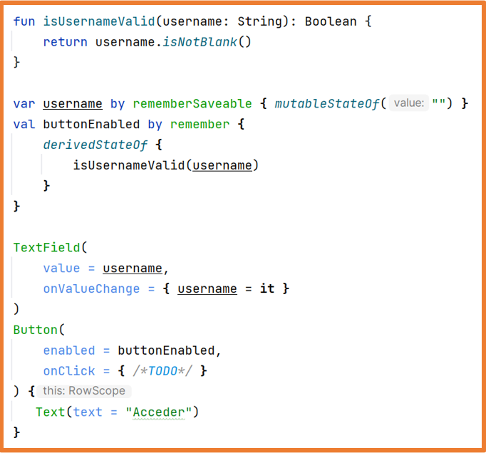
El botón solo se recompondrá cuando el valor de buttonEnabled cambie de true a false o viceversa.
Si el valor de buttonEnabled es true y al escribir otra letra sigue siendo true, la vista no se recompondrá.
Al desarrollar aplicaciones de cualquier tipo, elegir la arquitectura adecuada es muy importante.
El enfoque más común es utilizar una arquitectura que separe la lógica de la aplicación (programación) de las vistas (interfaz gráfica).
De esta manera, las vistas son responsables de mostrar la interfaz (renderizado), mientras que la lógica puede separarse en otros componentes donde se programa la funcionalidad de la aplicación.
Con esta separación, será más fácil trabajar con la lógica, realizar cambios y llevar a cabo pruebas más adelante…
Las arquitecturas más utilizadas en Android son:
La arquitectura MVC promueve la organización de la aplicación en lo que son tres partes diferenciadas y débilmente acopladas.
Un acoplamiento débil significa que los cambios en una parte del código tienen un efecto mínimo en otras partes.
En el mejor de los casos, al utilizar el patrón MVC, un cambio no afectará a otras partes.
Existen muchas implementaciones de la arquitectura MVC; en la implementación de Android, tanto el controlador como la vista se definen en el mismo lugar (Activity o Fragment), y ambos dependen del modelo.
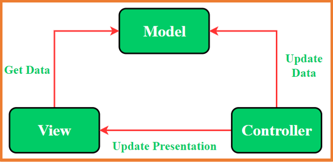
Una de las desventajas de esta arquitectura es que toda la responsabilidad recae sobre el mismo elemento (Activity o Fragment).
Esto puede causar problemas de rendimiento si hay una tarea pesada ejecutándose en el hilo principal.
MVP -> Modelo Vista Presentador:
Organiza mejor los archivos y cambia la forma en que los tres componentes trabajan juntos.
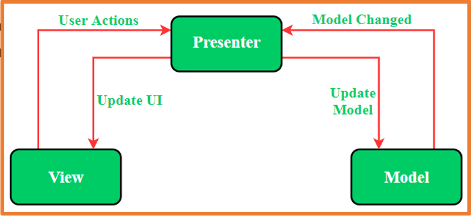
MVVM -> Modelo Vista Vista-Modelo:
El ViewModel es responsable de:
Además, el ViewModel sobrevive a los cambios de configuración como los cambios de orientación, lo que significa que la información almacenada en el ViewModel se preserva en todo momento.
LiveData
Aunque el ViewModel puede trabajar con estados tal como los hemos usado hasta ahora, se recomienda utilizar la clase LiveData porque está optimizada para el ciclo de vida de la Activity.
LiveData permite mantener datos que pueden ser observados como estados.
Está diseñado específicamente para ser utilizado en Activities, Fragments o Services de modo que solo notifica a los observadores si están actualmente en ejecución (estado de ciclo de vida activo).
Permite cambios de orientación del dispositivo sin perder los datos observados.
Android proporciona las clases LiveData y MutableLiveData para almacenar cualquier tipo de dato y observar sus cambios.
Android proporciona automáticamente dos métodos para almacenar datos en un LiveData:
El método postValue debe usarse siempre cuando se trabaja desde una corrutina, y también debe especificarse el contexto Dispatchers.IO.
ViewModel y LiveData
A partir de ahora:
Seguiremos paso a paso cómo crear una aplicación utilizando ViewModel; en este caso, la aplicación será una Lista de Libros. Lo primero que haremos será crear el proyecto en la carpeta seleccionada con la plantilla predeterminada de Compose.
Tras crear el proyecto, es necesario añadir las dependencias requeridas. Para este ejemplo, se añadirán las dependencias de navegación, serialización, iconos extendidos y LiveData:
navigation = "2.9.6"
serialization = "1.9.0"
runtimeLivedata = "1.10.0"
androidx-navigation = { group = "androidx.navigation", name = "navigation-compose", version.ref = "navigation" }
kotlinx-serialization-json = { group = "org.jetbrains.kotlinx", name = "kotlinx-serialization-json", version.ref = "serialization" }
androidx-material-icons = { group = "androidx.compose.material", name = "material-icons-extended" }
androidx-runtime-livedata = { group = "androidx.compose.runtime", name = "runtime-livedata", version.ref = "runtimeLivedata" }
kotlin-serialization = { id = "org.jetbrains.kotlin.plugin.serialization", version.ref = "kotlin" }alias(libs.plugins.kotlin.serialization)implementation(libs.androidx.navigation)
implementation(libs.kotlinx.serialization-json)
implementation(libs.androidx.material.icons)
implementation(libs.androidx.runtime.livedata)
Para almacenar los datos, crea el archivo Book.kt en un paquete llamado model, que contendrá una data class definiendo el objeto Book y un método estático para recuperar todos los libros.
data class Book(
val title: String = "",
val author: String = "",
var favorite: Boolean = false,
var visible: Boolean = true,
) {
companion object{
fun getData() : List<Book> {
return listOf(
Book("Ready Player One", "Ernest Cline"),
Book("El juego de Ender", "Orson Scott Card"),
Book("El señor de los anillos", "J. R. R. Tolkien"),
Book("La historia interminable", "Michael Ende"),
Book("Juego de tronos", "George R. R. Martin"),
Book("El color de la magia", "Terry Pratchett"),
Book("La sangre de los elfos", "Andrzej Sapkowski"),
Book("Dune", "Frank Herbert"),
Book("Una educación mortal: Primera lección de Escolomancia", "Naomi Novik"),
Book("El nombre del viento", "Patrick Rothfuss"),
Book("Harry Potter y la piedra filosofal", "J. K. Rowling"),
Book("La quinta ola", "Rick Yancey"),
Book("Las crónicas de Narnia", "C. S. Lewis"),
)
}
}
}
En un paquete llamado viewmodel, crea el archivo BookViewModel.kt, que contendrá una class para el ViewModel con todos los LiveData (estados) necesarios y los métodos para modificar esos LiveData.
class BookViewModel : ViewModel() {
// Los LiveData (estados) solo deben de poder cambiar desde el View Model, por ello se declaran private.
// Para acceder al valor de los estados desde el exterior del View Model se crea una variable no mutable
// que almacenará el mismo valor que la variable privada
// Lista de libros
private val _books = MutableLiveData<List<Book>>()
val books: LiveData<List<Book>> = _books
// Libro seleccionado
private val _selectedBook = MutableLiveData<Book>()
val selectedBook: LiveData<Book> = _selectedBook
// Variable para indicar que se están obteniendo los datos del repositorio
private var _isLoading = MutableLiveData<Boolean>()
val isLoading: LiveData<Boolean> = _isLoading
init { // Cuando se instancia un objeto BookViewModel tras llamar al constructor se ejecuta el bloque init
loadBookList()
}
// Función para reutilizar este código en una futura mejora en la que se podrá recargar la lista de libros
fun loadBookList() {
// Corrutina: coroutineScope
viewModelScope.launch(Dispatchers.IO) {
_isLoading.postValue(true)
delay(2000)
_books.postValue(Book.getData())
_isLoading.postValue(false)
}
}
fun deleteBook(book: Book) {
// Con API o BBDD se mandaría el id y se borraría de la BBDD
// A continuación se actualiza la lista de libros eliminando el libro
_books.value = _books.value?.filter { it != book }
}
// Al pulsar sobre un libro se almacena como seleccionado.
fun onBookClicked(book: Book) {
_selectedBook.value = book
}
// Para marcar/desmarcar el libro como favorito
fun markAsFavorite(book: Book) {
_books.value?.map {
if (it == book) it.favorite = !it.favorite
}
}
fun searchBook(searchString: String) {
val searchList = mutableListOf<Book>()
_books.value?.forEach {
// val book = it.copy()
// book.visible = book.title.contains(searchString, true)
// searchList.add(book)
// Estas líneas son similares a las comentadas
val book = it.copy(visible = it.title.contains(searchString, true))
searchList.add(book)
}
_books.value = searchList
}
fun resetSearchList() {
val searchList = mutableListOf<Book>()
_books.value?.forEach {
// book.visible = true
// searchList.add(book)
// Estas líneas son similares a las comentadas
val book = it.copy(visible = true)
searchList.add(book)
}
_books.value = searchList
}
}En un paquete llamado navigation, crea los archivos Routes.kt y Navigation.kt, donde se definirá la navegación de la aplicación.
sealed class Routes {
// Ruta para la lista de libros
@Serializable
object Main
// Ruta para la información de un libro
@Serializable
object BookInfo
}@Composable
fun Navigation() {
val navController = rememberNavController()
val bookViewModel = remember { BookViewModel() }
NavHost(
navController = navController,
startDestination = Routes.Main, // Ruta por la que comenzará la aplicación,
enterTransition = { slideInHorizontally(initialOffsetX = { it }) },
exitTransition = { slideOutHorizontally(targetOffsetX = { -it }) },
popEnterTransition = { slideInHorizontally(initialOffsetX = { -it }) },
popExitTransition = { slideOutHorizontally(targetOffsetX = { it }) },
) {
composable<Routes.Main> {
MainScreen(
onBookClick = {
navController.navigate(Routes.BookInfo)
},
bookViewModel = bookViewModel
)
}
composable<Routes.BookInfo> {
BookInfoScreen(
onBackArrowClick = {
navController.popBackStack()
},
bookViewModel = bookViewModel
)
}
}
}En el archivo MainActivity.kt, se llama al componente Navigation, que será el contenido de la Activity.
class MainActivity : ComponentActivity() {
override fun onCreate(savedInstanceState: Bundle?) {
super.onCreate(savedInstanceState)
enableEdgeToEdge()
setContent {
BooksViewModelTheme {
Navigation()
}
}
}
}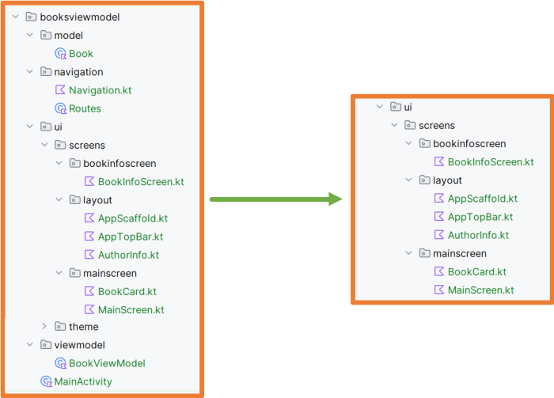
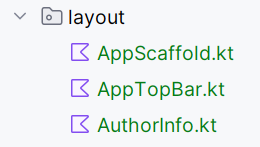
AppScaffold
// Componente propio para tener un Scaffold unificado en toda la aplicación
@Composable
fun AppScaffold(
showBackArrow: Boolean = false,
onBlackArrowClick: () -> Unit = {},
content: @Composable () -> Unit
) {
Scaffold(
topBar = {
AppTopBar(
showBackArrow = showBackArrow,
onClickBlackArrow = onBlackArrowClick,
)
},
) { paddingValues ->
Column(
modifier = Modifier.padding(paddingValues)
) {
Box(
modifier = Modifier.weight(9f).fillMaxWidth()
) {
content()
}
HorizontalDivider(
modifier = Modifier.background(MaterialTheme.colorScheme.onPrimary).height(2.dp)
)
AuthorInfo(modifier = Modifier.padding(vertical = 4.dp).weight(1f))
}
}
}AppTopBar
// Componente propio para la TopAppBar del Scaffold usado en la APP
@OptIn(ExperimentalMaterial3Api::class)
@Composable
fun AppTopBar(
showBackArrow: Boolean = false, // Sirve para indicar si se mostrará o no la flecha atrás
onClickBlackArrow: () -> Unit,
) {
CenterAlignedTopAppBar(
title = {
Row(
verticalAlignment = Alignment.CenterVertically
) {
Icon(imageVector = Icons.Default.LocalLibrary, contentDescription = null)
Spacer(modifier = Modifier.width(16.dp))
Text(
text = "Lista de libros",
fontSize = 30.sp
)
Spacer(modifier = Modifier.width(16.dp))
Icon(imageVector = Icons.Default.LocalLibrary, contentDescription = null)
}
},
navigationIcon = {
if (showBackArrow) {
IconButton(
// onClick = { onClickBlackArrow() }
onClick = onClickBlackArrow
) {
Icon(
imageVector = Icons.AutoMirrored.Filled.ArrowBack,
contentDescription = "Ir atrás",
tint = MaterialTheme.colorScheme.onPrimary
)
}
}
},
colors = TopAppBarDefaults.largeTopAppBarColors(
containerColor = MaterialTheme.colorScheme.primary,
titleContentColor = MaterialTheme.colorScheme.onPrimary
)
)
}AuthorInfo
// Componente propio para mostrar la información del autor
@Composable
fun AuthorInfo(modifier: Modifier = Modifier) {
Row(
modifier = Modifier
.fillMaxWidth()
.background(MaterialTheme.colorScheme.primary)
.then(modifier),
horizontalArrangement = Arrangement.spacedBy(
20.dp,
Alignment.CenterHorizontally
),
verticalAlignment = Alignment.CenterVertically,
) {
Image(
painter = painterResource(id = R.drawable.rick),
contentDescription = "Foto de Rick",
modifier = Modifier
.clip(CircleShape)
.border(
width = 3.dp,
color = MaterialTheme.colorScheme.onPrimary,
shape = CircleShape
)
.width(60.dp)
)
Text(
text = "Rick Sanchez",
fontSize = 35.sp,
fontWeight = FontWeight.Bold,
color = MaterialTheme.colorScheme.onPrimary
)
}
}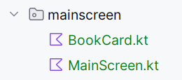
MainScreen
En un paquete llamado mainscreens, crea el archivo MainScreen.kt para la interfaz de la pantalla principal que mostrará la lista de libros.
@Composable
fun MainScreen(
onBookClick: (Book) -> Unit = {},
bookViewModel: BookViewModel
) {
AppScaffold(showBackArrow = false) {
// Suscripción a la lista de libros del ViewModel
val books: List<Book> by bookViewModel.books.observeAsState(initial = emptyList())
// Suscripción a la variable que indica si se están consiguiendo la lista de libros
val isLoadingBooks: Boolean by bookViewModel.isLoading.observeAsState(initial = false)
Column(
modifier = Modifier
.fillMaxWidth()
.background(MaterialTheme.colorScheme.primary)
) {
HorizontalDivider(
thickness = 2.dp,
color = MaterialTheme.colorScheme.onPrimary,
)
LazyColumn(
modifier = Modifier
.fillMaxWidth()
.background(MaterialTheme.colorScheme.primary)
.padding(vertical = 8.dp)
.weight(7.7f)
) {
items(books) { book ->
if (book.visible) {
BookCard(
book = book,
onBookClick = {
// Al clicar sobre el libro se actualiza en el ViewModel el libro seleccionado
bookViewModel.onBookClicked(book)
// Se ejecuta el código recibido en la lamnda: navegar a la ventana de información
onBookClick(it)
},
onBookDelete = {
// Al clicar sobre el icono de papelera se elimina el libro de la lista del ViewModel
bookViewModel.deleteBook(book)
}
)
}
}
}
Row(
horizontalArrangement = Arrangement.End,
verticalAlignment = Alignment.CenterVertically,
modifier = Modifier.fillMaxWidth().weight(.3f)
) {
Text(
text = "Recarga la lista de libros",
color = MaterialTheme.colorScheme.onPrimary
)
IconButton(onClick = {
bookViewModel.loadBookList()
}) {
Icon(
imageVector = Icons.Default.Refresh,
contentDescription = "Recargar",
tint = MaterialTheme.colorScheme.onPrimary
)
}
}
// Cuando la variable del ViewModel es true es que se está cargando la lista de libros
// en ese caso se mostrará un texto y una línea de progreso indicando la carga
if (isLoadingBooks) {
Column(
verticalArrangement = Arrangement.Center,
horizontalAlignment = Alignment.CenterHorizontally,
modifier = Modifier
.fillMaxSize()
.background(MaterialTheme.colorScheme.primary)
) {
Text(
text = "Cargando...",
fontSize = 40.sp,
fontWeight = FontWeight.Bold,
color = MaterialTheme.colorScheme.onPrimary
)
Spacer(modifier = Modifier.height(20.dp))
CircularProgressIndicator(
color = MaterialTheme.colorScheme.onPrimary
)
}
}
}
}
}BookCard
@Composable
fun BookCard(
book: Book,
onBookClick: (Book) -> Unit,
onBookDelete: (Book) -> Unit,
) {
OutlinedCard(
modifier = Modifier
.padding(vertical = 4.dp, horizontal = 8.dp)
.clickable {
onBookClick(book)
}
) {
ListItem(
headlineContent = { Text(text = book.title) },
supportingContent = { Text(text = book.author) },
leadingContent = {
if (book.favorite) {
Icon(
imageVector = Icons.Default.Star,
contentDescription = "libro favorito",
tint = Color(0xFFFB8C00)
)
}
},
trailingContent = {
Icon(
imageVector = Icons.Default.Delete,
contentDescription = "eliminar libro",
modifier = Modifier.clickable {
onBookDelete(book)
}
)
}
)
}
}En un paquete llamado screens, crea el archivo BookInfoScreen.kt para mostrar información detallada del libro de la lista sobre el que se hizo clic.
@Composable
fun BookInfoScreen(
onBackArrowClick: () -> Unit = {},
bookViewModel: BookViewModel
) {
AppScaffold(
showBackArrow = true,
onBlackArrowClick = onBackArrowClick
) {
// Suscripción al libro seleccionado del ViewModel
val book: Book by bookViewModel.selectedBook.observeAsState(Book())
var favorite by rememberSaveable { mutableStateOf(book.favorite) }
Column(
modifier = Modifier
.fillMaxWidth()
.background(MaterialTheme.colorScheme.primaryContainer)
.padding(8.dp)
) {
Row(
horizontalArrangement = Arrangement.Start,
verticalAlignment = Alignment.CenterVertically,
modifier = Modifier.fillMaxWidth()
) {
Column {
Icon(
imageVector = Icons.AutoMirrored.Filled.MenuBook,
contentDescription = "icono libro"
)
if (favorite) {
Spacer(modifier = Modifier.height(4.dp))
Icon(
imageVector = Icons.Default.Star,
contentDescription = "favorito",
tint = Color(0xFFFB8C00)
)
}
}
Spacer(modifier = Modifier.width(20.dp))
Text(
text = book.title,
fontSize = 30.sp,
lineHeight = 38.sp
)
}
Spacer(modifier = Modifier.height(10.dp))
Text(
text = book.author,
fontSize = 16.sp
)
TextButton(onClick = {
// bookViewModel.markAsFavorite(book)
favorite = !favorite
}) {
Text(text = if (favorite) "Quitar favorito" else "Marcar favorito")
}
Row(
modifier = Modifier
.fillMaxSize()
.background(MaterialTheme.colorScheme.tertiary)
.padding(8.dp)
) {
Text(
text = "Aquí se mostrará la información detallada del libro.",
color = MaterialTheme.colorScheme.onTertiary
)
}
}
}
}Cuando LiveData almacena una lista de objetos, aunque se modifique la lista, los cambios no se notifican a los observadores, por lo que no ocurre ninguna recomposición:
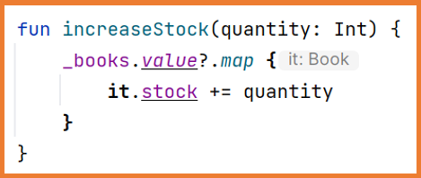
Esto sucede porque, aunque la lista se haya modificado, la instancia es la misma. Para solucionar esto, se debe crear una nueva lista y realizar copias de los elementos de la lista, modificarlos y añadirlos a la nueva lista.
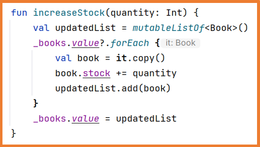
Si vamos a modificar el valor desde otro hilo que no sea el principal, debemos hacerlo con myLiveData.postValue(valor) en lugar de myLiveData.value = valor. Es decir, si estamos dentro de una corrutina y cambiamos el valor de LiveData, utilizaremos postValue para notificar correctamente.
_usernameLD.postValue("Otro valor")Si hay un ViewModel que es compartido por todas las Pantallas (Screens), puedes crear el ViewModel en MainActivity usando "by"
val workoutViewModel by viewModels<WorkoutViewModel>()O en el componente Navigation usando "=remember":
val workoutViewModel = remember {
WorkoutViewModel()
}Si hay un ViewModel que es usado solo por algunas Pantallas (no todas), crea el ViewModel en Navigation usando "=remember" y pásalo a las Pantallas que lo necesiten.
Si hay un ViewModel que solo se usa en una Pantalla, crea el ViewModel en esa Pantalla usando "=remember". (También puedes usar la función viewModel())
val workoutViewModel= viewModel(){
//Si el constructor de nuestro ViewModel tiene un parámetro de entrada.
WorkoutViewModel(3)
}O simplemente:
//Sin parámetro de entrada inicial
val workoutViewModel = viewModel(WorkoutViewModel::class.java)Flow es un componente de la librería de corrutinas que nos permite implementar programación reactiva.
Es el sustituto natural de RxJava, ya que la gran mayoría de cosas que se pueden hacer allí también están aquí, y en general de forma más sencilla, porque se basa en conceptos que ya conocemos sobre corrutinas , secuencias , y colecciones para ofrecernos una solución muy fácil.
Los Flows son secuencias asíncronas.
Los Flows son perezosos (lazy)
Al igual que las secuencias, los Flows son perezosos, lo que significa que hasta que alguien solicita los valores del Flow, las operaciones sobre ellos no se ejecutan.
Esto hace que se les llame cold streams, porque no empezarán a proporcionar datos hasta que alguien los recoja (collect). Además, si otro elemento se conecta al Flow, empieza desde el primer valor del flow.
Es importante entender esto, porque si un Flow realiza operaciones pesadas, se repetirán cada vez que alguien recoja (collect) sus valores.
Los Flows son asíncronos
A diferencia de las secuencias, que se procesan un elemento tras otro, en Flow esto no tiene por qué ser así. Puede pasar mucho tiempo entre un valor y el siguiente.
Por eso normalmente no los ejecutaremos en el hilo principal.
Como todo esto sucede en un contexto de corrutinas, piensa que la gestión de hilos va a ser muy fácil de manejar.
Los Flows son secuenciales
Esto significa que si un Flow va a generar x elementos, y estos consisten en procesamiento pesado, se ejecutarán uno detrás de otro: hasta que el anterior termine, el siguiente no empezará.
Esto, que a menudo es una ventaja, a veces puede ser una desventaja. Imagina que tienes que hacer 10 peticiones a servidores y que cada una es independiente de la anterior. Aun así, tendrías que esperar a que termine la anterior para lanzar la siguiente.
Esto se puede modificar, y lo veremos más adelante. Pero ten en cuenta que por defecto funcionan así
Tenemos 3 formas de construir un Flow:
asFlow()
Quizá esta sea la forma más sencilla de generar un Flow. Todas las colecciones, incluidas las secuencias, se pueden convertir a un Flow usando esta función
val flow = listOf(1, 2, 3, 4).asFlow()flowOf()
Se genera un Flow con una secuencia de valores predefinidos, el equivalente a listOf() o sequenceOf()
val flow = flowOf(1, 2, 3, 4)flow { }
El más versátil de todos, y el que seguramente usarás con más frecuencia.
Creamos un bloque flow { } y añadimos valores con la función emit().
Además, aquí tenemos la ventaja de que este bloque recibe un contexto de corrutinas, así que podemos llamar a funciones suspend sin ningún problema dentro de él.
flow {
for (i in (0..3)) {
delay(200)
emit(i)
}
}Los Flows se pueden transformar igual que las colecciones, lo que los hace muy fáciles de usar.
Podemos filtrar, mapear, combinar, transformar... y un gran número de operaciones que te permiten adaptar estos flows a las necesidades que tengas en el lugar donde los uses.
Como ocurre con las secuencias, hay dos tipos de operadores
Operadores intermedios
Son operadores que no lanzan ninguna operación, independientemente de su complejidad. Lo que hacen es devolver un nuevo Flow que es la combinación del anterior con la nueva operación.
Por ejemplo, podemos usar la operación filter() :
fun makeFlow() = flow{
emit(1)
delay(500)
emit(2)
delay(500)
emit(3)
delay(500)
emit(4)
delay(500)
}
makeFlow() //user function that returns a flow
.filter { it % 2 == 0 } //Only emit the even elements of the flow
Y luego hacer un map() para transformar los resultados:
makeFlow()
.filter { it % 2 == 0 }
.map { "Value is $it" } //Emits the even elements and map them to a StringPero hay un operador especialmente interesante, que es transform() , y que nos permite hacer transformaciones tan complejas como necesitemos. Solo tenemos que llamar a emit() con los valores que queramos devolver:
flowOf(1,2,3,4,5).transform{
if(it % 2 ==0 ) emit("Value -> $it")
}.collect(){
println("$it")
}Salida:
Value -> 2
Value -> 4También puedes combinar varios Flows con operaciones como zip() o combine() :
val flow1 = flowOf(1, 2, 3, 4)
val flow2 = flowOf("1", "2", "3", "4")
flow1.zip(flow2) { a, b -> "$a -> $b" }val flow1 = flowOf(1, 2, 3, 4)
val flow2 = flowOf("1", "2", "3", "4", "5")
flow1.combine(flow2) { a, b -> "$a -> $b" }.collect(){
println(it)
}Resultado
1 -> 1
2 -> 2
3 -> 3
4 -> 4
4 -> 5Podemos aplicar alguna acción a cada uno de los elementos del flow con onEach()
val f1 = flowOf(1,2,3,4,5).onEach { delay(300) }
val f2 = flowOf("a", "b", "c", "d").onEach { delay(500) }
f1.combine(f2){f1, f2 ->
"$f1 -> $f2"
}.collect(){
println("$it")
}Resultado
1 -> a
2 -> a
3 -> a
3 -> b
4 -> b
4 -> c
5 -> c
5 -> dRecuerda que todos estos operadores pueden tener funciones suspend dentro, así que esas operaciones pueden ser tan simples como una suma o tan complejas como llamar a un servidor y guardar el resultado en una base de datos.
Operadores terminales
Estos sí lanzan la ejecución y hacen que comience la producción de valores y que estos se emitan.
El operador terminal más común es collect() , que le indica al Flow que ya hay alguien al otro lado (el collector) esperando resultados, y que puede empezar a emitirlos.
val flow= flowOf(1,2,3,4,5,6)
flow.collect(){
println(it)
}Otra función terminal interesante es toList() . Esperará a que el flow termine de emitir por completo y lo convertirá en una lista.
En este ejemplo vamos a tomar un flow anterior, convertirlo en una lista e imprimir su resultado.
val flow1 = flowOf(1, 2, 3, 4)
val flow2 = flowOf("1", "2", "3", "4", "5")
println(
flow1.combine(flow2) { a, b -> "$a -> $b" }.toList()
)Salida:
[1 -> 1, 2 -> 2, 3 -> 3, 4 -> 4, 4 -> 5]Pero no es la única: tenemos varias más como toSet(), first(), single(), reduce() o fold() .
Flow tiene algunas restricciones para que todo el sistema funcione correctamente.
La primera es que no podemos cambiar de contexto dentro del código de un flow. Si hacemos esto, obtendremos una excepción:
fun makeFlow() = flow {
withContext(Dispatchers.IO) {
for (i in (0..3)) {
delay(200)
emit(i)
}
}
}Flow siempre se ejecutará en el contexto de la corrutina que lo lanzó. Pero muchas veces no será lo que queremos, ¿cómo cambiamos entonces el contexto de ejecución? Podemos usar la función flowOn():
val flow = flowOf(1,2,3,4)
flow.flowOn(Dispatchers.IO)
.collect { print(it) }Respecto a las excepciones, ocurre algo parecido. Las excepciones no deberían capturarse dentro de los flows, para no ocultarlas y que el resto del código no se entere. Para esto hay una función especial:
makeFlow()
.catch { throwable -> println(throwable.message) }
.collect { print(it) }
}Si no capturamos la excepción, seguirá propagándose normalmente, como ocurre con el resto de componentes de corrutinas.
Hasta aquí hemos visto el comportamiento general de los flows y sus principales características. Ahora veremos algunos tipos de especialización de flow que pueden ser interesantes para ciertos casos.
StateFlow
Recuerda que dijimos que los flows genéricos eran cold streams , es decir, hasta que alguien empieza a recolectar (collect) sus valores, el flow no comienza a emitir.
Los StateFlows son hot streams , es decir, haya o no alguien escuchando, van a emitir valores. Si nos conectamos a un Stateflow , nos dará el último valor, no empezará por el primero.
Los StateFlows son especialmente interesantes para guardar el estado de la UI: cuando
nos conectamos
nos dirá cuál es el último estado en el que debería estar la UI.
A partir de ahí, si el estado cambia, la UI recibirá el nuevo estado.
Como has visto, esto sería el equivalente de LiveData .
Vamos a hacer un ejemplo en el que simulamos un caso de uso en el que la UI se va a actualizar (en este caso, la consola). Actualizaremos la UI cada segundo pasándole una nueva nota . Para ello usaremos un MutableStateFlow que será del tipo Note.
data class Note(
val title:String,
val description:String
)
class ViewModel(){ //It would simulate a ViewModel but for this example is a simple class
var state: MutableStateFlow<Note> = MutableStateFlow(Note("Title 1", "Description 1"))
suspend fun update(){
var counter = 1
while(true){
state.value = Note("Title $counter", "Description $counter")
counter++
delay(500)
}
}
}
//This main function is just for running the example
fun main():Unit = runBlocking {
val viewModel = ViewModel()
launch {
viewModel.update()
}
viewModel.state.collect(){
println(it)
}
}Fíjate en que para actualizar el valor del StateFlow , el nuevo valor se pasa mediante la propiedad value de la variable state. Observa también que para el valor inicial del StateFlow pasamos una nota en el constructor.
viewModel.state.collect(::println)El código anterior tiene un problema: desde la UI podríamos cambiar el valor del state flow haciendo esto.
viewModel.state.value = Note("Fake title", "Fake description")Es decir, está mal encapsulado. Para evitarlo debemos hacer que la propiedad accesible desde fuera sea de solo lectura. Veamos cómo podríamos hacerlo.
private val _state: MutableStateFlow<Note> = MutableStateFlow(Note("Title 1", "Description 1"))
val state:StateFlow<Note> = _state.asStateFlow()Vemos que nuestra variable MutableStateFlow es privada y ofrecemos una pública que no se puede cambiar, ni tampoco se puede modificar la propiedad value. Esto se llama backing property
Recoger un Flow en un Composable
Si necesitamos recoger un flow y que sea una variable de estado para recomposición, deberíamos usar collectAsState() del flow. Podemos hacerlo así:
val books: List by bookViewModel.books.collectAsState() SharedFlow
StateFlow es una especialización de SharedFlow. SharedFlow es mucho más configurable. Cuando las condiciones exactas de un StateFlow no son suficientes para nosotros, podemos configurar el SharedFlow para que se comporte exactamente como necesitamos.
SharedFlow tiene una serie de valores de configuración para ser más flexible en el número de valores que almacenamos, qué ocurre cuando consumimos esos valores más lentamente que el ritmo al que se están emitiendo, y cuál es el número máximo de valores que queremos almacenar.
Veamos cómo usaríamos estas opciones. Volvemos al ejemplo anterior de Notes. En este caso usamos un MutableSharedFlow
private val _state = MutableSharedFlow<Note>()
val state:SharedFlow<Note> = _state.asSharedFlow()Podemos ver que los SharedFlows no pasan un valor inicial en el constructor.
Para cambiar valores no usamos la propiedad value, ya que no es un único valor, sino que usamos la función emit.
_state.emit(Note("Title $counter", "Description $counter"))Para recolectarlo lo hacemos de la misma forma.
viewModel.state.collect(::println)Por ahora, el código completo queda así:
data class Note(
val title:String,
val description:String
)
class ViewModel(){ //It would simulate a ViewModel but for this example is a simple class
private val _state = MutableSharedFlow<Note>()
val state:SharedFlow<Note> = _state.asSharedFlow()
suspend fun update(){
var counter = 1
while(true){
_state.emit(Note("Title $counter", "Description $counter"))
counter++
delay(500)
}
}
}
//This main function is just for running the example
fun main():Unit = runBlocking {
val viewModel = ViewModel()
launch {
viewModel.update()
}
viewModel.state.collect(::println)
}Salida:
Note(title=Title 1, description=Description 1)
Note(title=Title 2, description=Description 2)
Note(title=Title 3, description=Description 3)
Note(title=Title 4, description=Description 4)
Note(title=Title 5, description=Description 5)
Note(title=Title 6, description=Description 6)
Note(title=Title 7, description=Description 7)
....De momento está funcionando exactamente igual que antes. Ahora veamos qué pasa si empezamos a recolectar después de un segundo (línea 7)
fun main():Unit = runBlocking {
val viewModel = ViewModel()
launch {
viewModel.update()
}
delay(1000)
viewModel.state.collect(::println)
}En este caso vemos que hemos perdido los dos primeros valores: empieza a recolectar desde el 3.
Note(title=Title 3, description=Description 3)
Note(title=Title 4, description=Description 4)
Note(title=Title 5, description=Description 5)
....Si no le indicamos nada, por defecto este SharedFlow no almacenará ningún valor, y por tanto los valores antiguos no se vuelven a emitir.
¿Cómo podemos configurar esto? Si vamos a la creación del MutableSharedFlow veremos que tiene 3 argumentos: replay, extraBufferCapacity , onBufferOverflow.
Veamos para qué sirve cada uno:
replay . De tipo entero, podemos decirle cuántos valores queremos que almacene para que cuando nos suscribamos empiece por el primero almacenado. El valor por defecto es 0. En este caso vamos a configurarlo a 1
private val _state = MutableSharedFlow<Note>(
replay = 1
)Vemos como resultado que antes nos emitía desde el 3, y cuando ponemos 1 también recupera el 2.
Note(title=Title 2, description=Description 2)
Note(title=Title 3, description=Description 3)
Note(title=Title 4, description=Description 4)
.....Si en lugar de replay=1 configuramos 2, entonces devolverá los 2 almacenados, es decir, el primero y el segundo, y después ya emite el tercero con normalidad.
private val _state = MutableSharedFlow<Note>(
replay = 2
)Salida:
Note(title=Title 1, description=Description 1)
Note(title=Title 2, description=Description 2)
Note(title=Title 3, description=Description 3)
Note(title=Title 4, description=Description 4)
.....extraBufferCapacity . Almacenará valores en un buffer. Imaginemos que los valores se están recolectando más lentamente de lo que se están emitiendo. Para hacer la prueba añadiremos un println para ver cuándo se están emitiendo los valores (línea 4).
while(true){
delay(500)
_state.emit(Note("Title $counter", "Description $counter"))
println("Emitting Title= $counter")
counter++
}Además, al recolectar vamos a poner un delay de 1 segundo. Para ello pasamos la lambda.
viewModel.state.collect {
delay(1000)
println(it)
}Veamos la salida
Emitting Title= 1
Emitting Title= 2
Emitting Title= 3
Note(title=Title 1, description=Description 1)
Emitting Title= 4
Note(title=Title 2, description=Description 2)
Emitting Title= 5
Note(title=Title 3, description=Description 3)
Emitting Title= 6
Note(title=Title 4, description=Description 4)
Emitting Title= 7Vemos que, como tenemos un replay de 2, los dos primeros se emiten sin ser recolectados, se emite un tercero y recolectamos el primero; una vez se recolecta el primero se emite un cuarto; una vez se recolecta el segundo se emite un quinto. Es decir: una vez se agota la capacidad de replay, no se emiten más hasta que uno de los replays se recolecte; la función de emisión queda suspendida.
Para darle más capacidad de almacenamiento usamos el parámetro extraBufferCapacity, vamos a darle un valor de dos para que almacene 4 elementos en total (2 replay + 2 extraBufferCapacity).
private val _state = MutableSharedFlow<Note>(
replay = 2,
extraBufferCapacity = 2
)Salida:
Emitting Title= 1
Emitting Title= 2
Emitting Title= 3
Note(title=Title 1, description=Description 1)
Emitting Title= 4
Emitting Title= 5
Note(title=Title 2, description=Description 2)
Emitting Title= 6
Emitting Title= 7
Note(title=Title 3, description=Description 3)
Emitting Title= 8
Note(title=Title 4, description=Description 4)
Emitting Title= 9
....Vemos que va emitiendo hasta que el buffer se llena; una vez lleno se suspende hasta que se recolecta uno, para poder emitir otro.
Puede que no queramos que la función emit se suspenda, sino descartar los antiguos o los nuevos. Podemos hacer esto con el tercer parámetro, onBufferOverflow
onBufferOverflow . Su valor por defecto está configurado como BuffeOverFlow.SUSPEND, es decir, si el buffer está lleno, se suspende y no continúa emitiendo hasta que algún elemento se recolecta. Otros valores de este parámetro son:
BufferOverFlow.DROP_OLDEST , es decir, elimina los más antiguos para tener hueco en el buffer y seguir emitiendo.
private val _state = MutableSharedFlow<Note>(
replay = 2,
extraBufferCapacity = 2,
onBufferOverflow = BufferOverflow.DROP_OLDEST
)Si ponemos este valor en nuestro ejemplo vemos la siguiente salida.
Emitting Title= 5
Note(title=Title 2, description=Description 2)
Emitting Title= 6
Emitting Title= 7
Note(title=Title 3, description=Description 3)
Emitting Title= 8
Emitting Title= 9
Note(title=Title 4, description=Description 4)
Emitting Title= 10
Emitting Title= 11
Note(title=Title 6, description=Description 6)
Emitting Title= 12
Emitting Title= 13
Note(title=Title 8, description=Description 8)
Emitting Title= 14
....
Si nos fijamos en el elemento 5 (que era el más antiguo), no se ha recolectado: se ha descartado para poder emitir el elemento 10
BufferOverFlow.DROP_LATEST. En este caso descartaremos los nuevos que entren hasta que consumamos los antiguos.
Veamos los ejemplos:
private val _state = MutableSharedFlow<Note>(
replay = 2,
extraBufferCapacity = 2,
onBufferOverflow = BufferOverflow.DROP_LATEST
)Salida:
Emitting Title= 8
Emitting Title= 9
Note(title=Title 4, description=Description 4)
Emitting Title= 10
Emitting Title= 11
Note(title=Title 5, description=Description 5)
Emitting Title= 12
Emitting Title= 13
Note(title=Title 6, description=Description 6)
Emitting Title= 14
Emitting Title= 15
Note(title=Title 7, description=Description 7)
Emitting Title= 16
Emitting Title= 17
Note(title=Title 8, description=Description 8)
Emitting Title= 18
Emitting Title= 19
Note(title=Title 10, description=Description 10)
Emitting Title= 20
....En este caso tuvo que descartar el 9 para poder emitir el 10.
Otra diferencia con StateFlow es que si emitimos el mismo valor con SharedFlow lo volverá a emitir, mientras que con StateFlow no volvería a emitir el mismo valor de nuevo.
¿Cómo hacemos que un SharedFlow se comporte exactamente como un StateFlow?
Para ello, solo almacenamos el último valor, replay=1, no damos capacidad extra de buffer, y eliminamos el más antiguo cuando haya overflow.
private val _state = MutableSharedFlow<Note>(
replay = 1,
extraBufferCapacity = 0,
onBufferOverflow = BufferOverflow.DROP_OLDEST
)Solo nos faltaría una cosa para que se comportase exactamente como un StateFlow, y es precisamente que no vuelva a emitir si el valor no cambia.
Si emitimos siempre el mismo valor, se seguirá emitiendo.
_state.emit(Note("Title 1", "Description 1"))Salida:
Note(title=Title 1, description=Description 1)
Emitting Title= 4
Emitting Title= 5
Note(title=Title 1, description=Description 1)
Emitting Title= 6
Emitting Title= 7
Note(title=Title 1, description=Description 1)
Emitting Title= 8
Emitting Title= 9
Note(title=Title 1, description=Description 1)Podríamos comprobar antes de emitir que el elemento ha cambiado para emitirlo, pero SharedFlow nos proporciona una función que nos permite hacer esto: distinctUntilChanged() .
viewModel.state.distinctUntilChanged().collect {
delay(1000)
println(it)
}Ahora vemos que se sigue emitiendo, pero no se recolecta.
Emitting Title= 1
Emitting Title= 2
Emitting Title= 3
Note(title=Title 1, description=Description 1)
Emitting Title= 4
Emitting Title= 5
Emitting Title= 6
Emitting Title= 7
Emitting Title= 8Obviamente, si lo que queremos es eso, lo mejor es usar un StateFlow: simplemente queríamos mostrar que StateFlow es una especialización de SharedFlow.
Replica el caso práctico anterior.
Tienes aquí la implementación
Actividad 2
Replica el ejemplo de la lista de libros de los apuntes, pero en la ventana principal añade una foto tuya (tipo carnet) en la parte inferior y tu nombre completo.
Además, añade la funcionalidad necesaria para marcar/desmarcar un elemento como favorito desde la pantalla de información del elemento. La pantalla principal debe mostrar si el elemento está marcado como favorito.
Debería verse similar a esto:
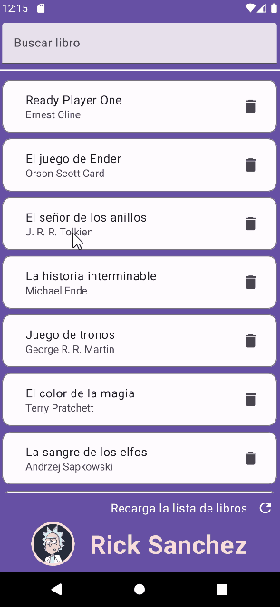
Aquí tienes una posible implementación. Ten en cuenta que se ha añadido un elemento de búsqueda.
Práctica 7
Crea un proyecto en Android Studio llamado WorkoutYourName.
La app permitirá al usuario introducir su nombre y el número de repeticiones a realizar en las series de ejercicios. Cuando el usuario pulse el botón de inicio, aparecerá un gif del ejercicio y las repeticiones irán disminuyendo (cada 2 segundos). Cuando llegue a cero, el gif cambiará a un nuevo ejercicio y el contador de repeticiones se reiniciará.
La app tendrá dos pantallas y se deben usar rutas/navegación.
Ventana principal:
Ventana de ejercicio:
Para que los datos estén disponibles en ambas ventanas, se debe usar un ViewModel.
ViewModel:
El ViewModel debe contener LiveData para almacenar los datos y todos los métodos necesarios para que la app funcione correctamente.
Los datos necesarios en el ViewModel son: "username", "number of repetitions", "current exercise" (para notificar qué ejercicio se debe realizar), y "doing exercise" (para indicar que el ejercicio está en marcha).
Los métodos necesarios en el ViewModel son:
A continuación tienes un posible algoritmo para el método de iniciar el ejercicio:
Se pueden crear LiveData y métodos adicionales si fuese necesario.
Instrucciones de entrega:
Para usar un GIF, puedes utilizar el siguiente @Composable pasando un entero (referencia a drawable):
@Composable
fun GifImage(gifRes: Int) {
val context = LocalContext.current
val imageLoader = remember {
ImageLoader.Builder(context)
.components {
if (SDK_INT >= 28) add(AnimatedImageDecoder.Factory())
else add(GifDecoder.Factory())
}
.build()
}
val request = remember(gifRes) {
ImageRequest.Builder(context)
.data(gifRes)
.size(Size.ORIGINAL)
// clave única para que Coil no “reutilice” el anterior
.memoryCacheKey("gif_$gifRes")
.diskCacheKey("gif_$gifRes")
.build()
}
key(gifRes) {
Image(
painter = rememberAsyncImagePainter(
model = request,
imageLoader = imageLoader
),
contentDescription = null
)
}
}
libs.versions.toml →
coilCompose = "3.3.0"coil-compose = { module = "io.coil-kt.coil3:coil-compose", version.ref = "coilCompose" }
coil-gif = { module = "io.coil-kt.coil3:coil-gif", version.ref = "coilCompose" }build.gradle.kts (Module:app) → sección dependencies
implementation(libs.coil.compose)
implementation(libs.coil.gif)Aquí tienes un ejemplo de cómo podría verse la app:
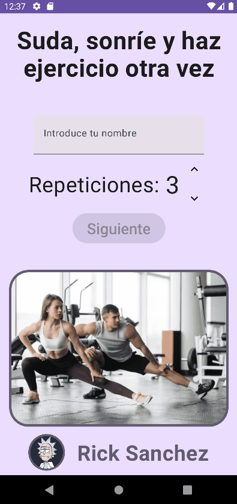